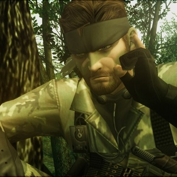

The plot of Metal Gear Solid 3
Metal Gear Solid 3: Snake Eater follows Naked Snake (later known as Big Boss) as he infiltrates a Soviet base in the Russian wilderness during the Cold War. The game is set in a vast, open world environment with a focus on stealth and survival mechanics. Players must navigate through dense forests, rivers, and enemy territory while avoiding detection. The story explores themes of loyalty, betrayal, and the moral complexities of warfare. As Snake progresses, he uncovers a conspiracy involving the Patriots and their manipulation of global events.

The main character in Metal Gear Solid 3
The main character of Metal Gear Solid 3: Snake Eater is Naked Snake, a US Special Forces operative in 1964, during the Cold War. Mentored by the legendary soldier The Boss, he's sent into the Soviet jungle to rescue a defecting scientist and stop a nuclear threat. Gameplay centers on survival: hunting food, treating injuries, and using camouflage. He's later revealed to be the man who becomes Big Boss, making his story the origin of the series' great antagonist, and a deeply personal one about loyalty and duty.

What is kojima doing today?
After going independent, Kojima Productions released Death Stranding in 2019, starring Norman Reedus, then Death Stranding 2: On the Beach on PS5 in 2025. The studio is developing a Death Stranding film and animated projects. Two games are in the works: OD, an experimental horror title made with Xbox, and Physint, a Metal Gear-style spy action game. PlayStation withdrew from Physint in June 2026, so Xbox took over publishing it in September. Neither game has a release date. Kojima says both remain in active development, and OD should come first.